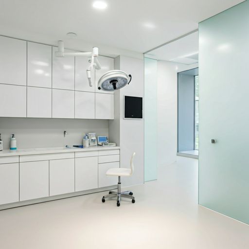

科室与诊疗服务
精细化专科诊疗，全方位守护宠物健康。我们以国际化标准构建六大核心科室，融合顶尖科技与医学人文。

神经科
脑部和脊髓高清核磁共振、脊骨手术、椎间盘手术、癫痫症诊断、脑室腹腔分流手术、全身电脑断层扫描三维重建、脑肿瘤手术等。
骨科
复杂骨折修复、骨关节矫正、髌骨复位和十字韧带预防手术、关节镜手术、人工髋关节置换、骨移植等。
肿瘤科
肿瘤的外科切除、电脑断层扫描三维重建用于肿瘤定位定性、靶向治疗、化学治疗、组合消融、非化疗安宁疗法、补充医学、免疫疗法等。
牙科
提供犬猫全口拔牙常规拔牙、补牙、根管治疗、人工骨填补、正畸种植牙等手术。
眼科
眼睑手术、角膜手术、白内障超声乳化（人工晶体植入）术、青光眼减压手术等。
内科
内科团队、CRRT（continuous renal replacement therapy，CRRT）血液净化治疗，治疗不同原因的中毒、各类肝肾衰竭、重症胰腺炎等危重症。
异宠科
针对兔子小啮类以及鸟类等各类异宠疾病进行诊治。诊治常见的内科疾病，同时可开展骨折、肿瘤切除、胃内异物取出等外科手术。
住院护理
24小时恒温住院区，专业护理人员定时巡视，提供最温馨的恢复环境。
预防保健
定制化免疫程序、驱虫方案及体检包，从源头预防疾病发生。
特色诊疗项目
核心技术驱动，为疑难病例提供更优解决方案
髌骨脱位及十字韧带预防手术
采用国际标准术式，针对运动系统损伤提供精准矫正与修复。
短头综合征矫正手术
改善短头犬呼吸质量，提升生命品质的专业外科干预。
人工髋关节置换手术
解决晚期髋关节疾病，恢复毛孩子自由行走的领先技术。
核磁共振（MRI）
提供脑部及脊髓高清显像，是神经系统疾病诊断的金标准。
犬猫牙科手术
从基础洁牙到复杂的根管治疗与正畸，全方位口腔健康管理。
CRRT血液净化
针对急性肾衰竭、中毒等重症病例的连续性血液净化支持。
诊疗透明化体系
我们拒绝过度医疗。每一项检查都基于临床逻辑与循证医学证据，让每一位家长清楚明白“为什么查”与“查到了什么”。
初步临床查体
经验丰富的医师进行系统感官评估，锁定核心问题区域。
精准实验室检测
针对性血检或影像，通过客观数据验证或推翻临床猜想。
方案深度解读
医师与家长面对面分析结果，提供阶梯式诊疗可选方案。
追踪与反馈
全程数字化档案跟进，动态调整治疗节奏，确保康复质量。
Diagnostic Standard
我们执行 AAFP & ISFM 国际猫病友好医院标准